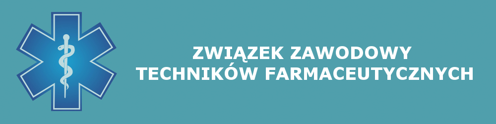

Dlaczego warto wspierać nasze działania?
* Związek Zawodowy Techników Farmaceutycznych RP jest jedyną w Polsce organizacją zrzeszającą wyłącznie grupę zawodową techników farmaceutycznych
* Środowisko aptekarskie jest zjednoczone w izbie, która ma wpływ na tworzone w Polsce prawo, dotyczące również techników farmaceutycznych
Wobec braku możliwości utworzenia samorządu zawodowego powstał Związek, który daje nam możliwość zjednoczenia w jednej silnej organizacji, stojącej na straży interesów naszego zawodu
* Służymy pomocą technikom zatrudnionym w aptekach ogólnodostępnych, szpitalnych, punktach aptecznych i przemyśle farmaceutycznym oraz w sklepach zielarskich
* Walczymy o korzystne regulacje prawne, między innymi:
- Szkolenia ciągłe
- Dokształcanie zawodowe techników farmaceutycznych
- Zabiegamy o poprawę 2-letniego systemu kształcenia techników szczególnie w zakresie jakości kształcenia nawiązując współpracę ze szkołami medycznymi w całej Polsce
* Dzięki naszym staraniom w istotny sposób poszerzono wykaz produktów leczniczych, które mogą być dopuszczone do obrotu w punktach aptecznych